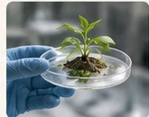
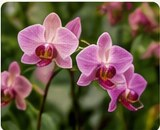
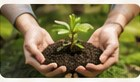

Plant propagation
Improving propagation methods for rare and threatened species.
RESEARCH · CONSERVATION · TECHNOLOGY
Discover our work
Our research teams investigate plant resilience, biodiversity and sustainable conservation methods.

Improving propagation methods for rare and threatened species.

Documenting and maintaining our living tropical plant collections.

Working with institutions across Europe to preserve biodiversity.
Selected publications and project summaries are available through our digital archive.
Explore the archive →Staff contribution · September 2022
Among the plants in the tropical office collection, the Monstera became a favourite with the infrastructure team. Its large split leaves made it easy to recognise, and it seemed to thrive beside the old server-room window.
Thomas Verhaegen: “I still miss having one of these on my desk. It made the office feel less like a server room.”